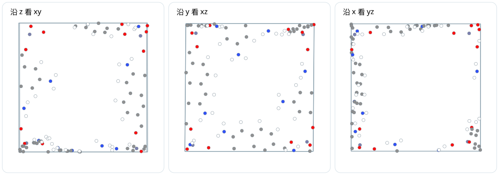
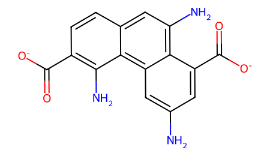

← 批次候选对比 · design_99c3c75f7ad84848
C48H33N9O13Zn4 · Zn · pcu

导出晶胞内原子的笛卡尔正投影；边框为晶胞边线，未绘制化学键。投影中的空白区域需通过孔隙计算判断可达性。
元素：C、H、N、O、Zn；原子颜色采用 Jmol 配色。
| 参数 | 结果 | 依据 |
|---|---|---|
| 计算晶胞化学式 | C48H33N9O13Zn4 | CIF 展开组成 |
| 金属元素 | Zn | CIF |
| 拓扑 | pcu | MOFid |
| 原子数 | 107 | CIF |
| a / b / c（Å） | 15.8370 / 16.0039 / 15.8297 | CIF |
| α / β / γ（°） | 89.963 / 89.581 / 90.063 | CIF |
| 晶胞体积（ų） | 4011.986 | 几何计算 |
| 计算密度（g/cm³） | 0.4989 | 晶胞质量 / 体积 |
| 空间群 | P1 1 | spglib；symprec=0.01 Å |
以下连接体来自导出结构的 MOFid 分解，保留识别得到的电荷形式。

Nc1cc(C(=O)[O-])c2c(c1)c1c(cc2N)ccc(c1N)C(=O)[O-][ "Nc1cc(C(=O)[O-])c2c(c1)c1c(cc2N)ccc(c1N)C(=O)[O-]" ]
节点：['[Zn][O]([Zn])([Zn])[Zn]']
最终几何检查：True； 最小原子距离：1.0098549718685572 Å；优化收敛：True。
coarse：45 步，fmax 阈值 0.2 eV/Å，收敛 True；fine：103 步，fmax 阈值 0.05 eV/Å，收敛 True
MOFid：Nc1cc(C(=O)[O-])c2c(c1)c1c(cc2N)ccc(c1N)C(=O)[O-].[Zn][O]([Zn])([Zn])[Zn] MOFid-v1.pcu.cat0.NO_REF;C0002
| 项目 | 状态 |
|---|---|
| 孔径、孔口、可达孔体积、表面积 | 待独立孔隙计算；计算时记录探针及原子半径参数 |
| 吸附量、选择性等应用性能 | 未接入该候选的独立性能结果 |
| 训练集 / 数据库新颖性 | 待指定参考集并进行身份与相似性比较 |
本候选为含 Zn 的 pcu 框架， 计算晶胞含 107 个原子，密度 0.4989 g/cm³。 优先补充孔隙可达性分析，再按研究气体与温压条件进行性能评价；合成路线和稳定性需进一步研究。
引擎 mofflow2_linker；来源 pcu/N16|Nc1cc(C(=O)O)c2c(N)cc3ccc(C(=O)O)c(N)c3c2c1。设计场景 mofflow2.co2_working_capacity 的目标值仅作为生成条件。
CIF SHA256：043f4af35e8da31ae8d43e706752c14e5f76115e8c3d2600587daf1c1e9ff2b7